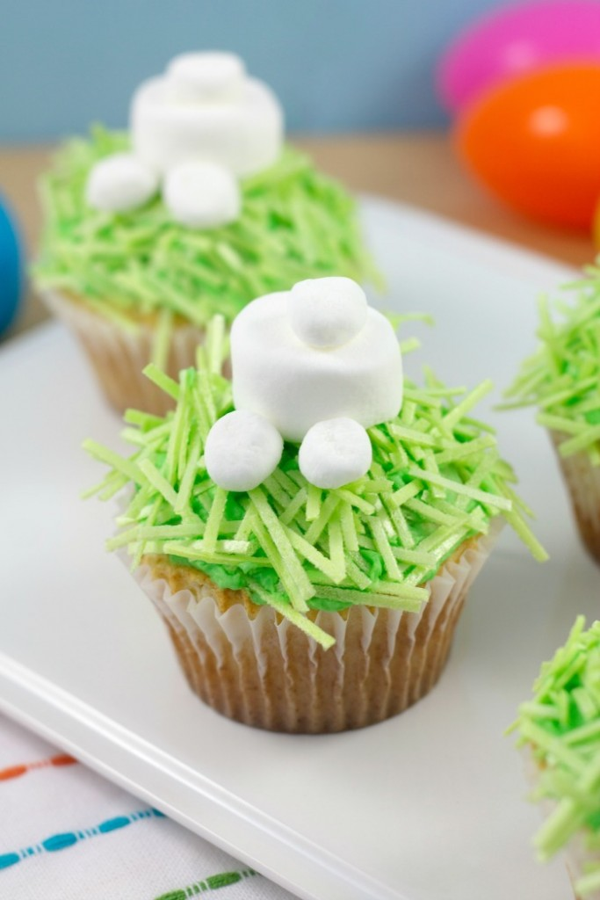

CUTE AS A BUNNY’S BUTT CUPCAKES
Ah, Easter. The time in spring when everything is growing, the family is all together, and your children are so hopped up on sugar you become convinced they might actually be able to levitate. It’s a time of happiness when adorable animals are all the rage, and what’s more adorable than a sweet little bunny? How about a Bunny Butt. Yes. Yes. A bunny’s butt is cuter than a normal ol’ bunny. Why? Because it’s the fuzzy wuzzy little tuckus end of the absolute cutest animal of spring. Think about it: how many songs do we sing about bunnies? I mean, there’s even a bunny hop. So while your kids are floating around on a cloud of sugar-induced, um, floatiness…you can make these Bunny Butt cupcakes and give them something adorable for when they calm back down. Enjoy!
